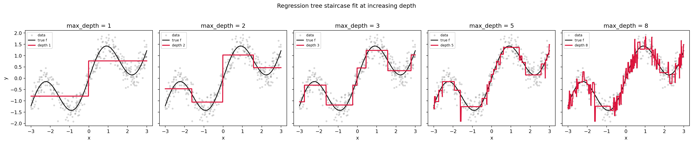
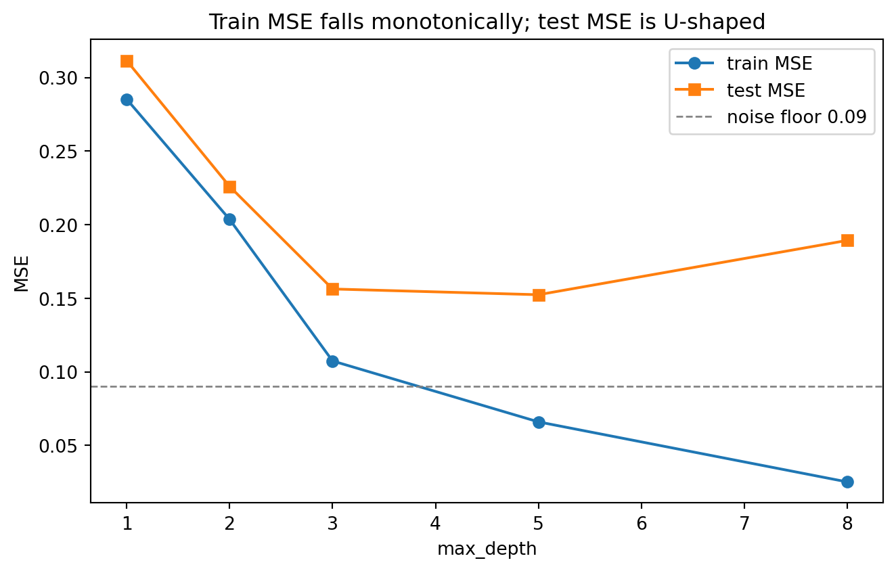

flowchart TD
A["Root region R"] -->|"x_j at most s"| B["Left child"]
A -->|"x_j above s"| C["Right child"]
B -->|"x_k at most t"| D["Leaf R1"]
B -->|"x_k above t"| E["Leaf R2"]
C -->|"x_l at most u"| F["Leaf R3"]
C -->|"x_l above u"| G["Leaf R4"]
104 Regression Trees
Decision trees are among the most interpretable tools in supervised learning, and their adaptation to continuous targets, the regression tree, is a foundational building block for the ensemble methods that dominate tabular prediction today. This chapter develops regression trees from first principles. We define the model, derive the splitting criterion from variance and mean squared error, study the piecewise-constant predictor it produces, examine smoothing and regularization, and close with the structural limitations that motivate bagging, random forests, and gradient boosting.
104.1 1. From Classification to Continuous Targets
104.1.1 1.1 The supervised regression setup
We observe training data \(\{(x_i, y_i)\}_{i=1}^{n}\) where each \(x_i \in \mathbb{R}^p\) is a feature vector and each \(y_i \in \mathbb{R}\) is a continuous response. We seek a function \(\hat{f}: \mathbb{R}^p \to \mathbb{R}\) that predicts \(y\) from \(x\) with low expected error. The standard loss is squared error, so we aim to minimize the risk
\[ R(f) = \mathbb{E}_{(X,Y)}\left[(Y - f(X))^2\right]. \]
The minimizer over all measurable functions is the conditional mean \(f^{*}(x) = \mathbb{E}[Y \mid X = x]\), the regression function. Every estimator in this chapter can be understood as an attempt to approximate \(f^{*}\) from finite data.
104.1.2 1.2 What a tree represents
A regression tree approximates \(f^{*}\) by partitioning the feature space into \(M\) disjoint axis-aligned regions \(R_1, \dots, R_M\) and assigning a single constant prediction \(c_m\) to each region. The model is
\[ \hat{f}(x) = \sum_{m=1}^{M} c_m \, \mathbb{1}\{x \in R_m\}. \]
The partition is built by recursive binary splitting. Starting from the full space, the algorithm repeatedly chooses a feature \(j\) and a threshold \(s\) and divides a region into two children,
\[ R_{\text{left}}(j, s) = \{x : x_j \le s\}, \qquad R_{\text{right}}(j, s) = \{x : x_j > s\}, \]
producing the familiar binary tree whose leaves correspond to the regions \(R_m\). Because each split conditions on a single feature, the resulting partition cells are axis-aligned hyperrectangles. This is the key structural assumption, and it drives both the strengths and the weaknesses we discuss later.
The diagram below shows how recursive binary splitting turns the full feature space into a tree of axis-aligned regions, where each internal node tests one feature against one threshold and each leaf emits the mean response of the points it contains.
| Node | Prediction |
|---|---|
| Root region R | Predict the mean of all responses \(y\) |
| Leaf R1 | Constant \(c_1\) equal to the region mean |
| Leaf R2 | Constant \(c_2\) equal to the region mean |
| Leaf R3 | Constant \(c_3\) equal to the region mean |
| Leaf R4 | Constant \(c_4\) equal to the region mean |
104.2 2. The Splitting Criterion: Variance and MSE Reduction
104.2.1 2.1 Optimal leaf values under squared error
Suppose a region \(R_m\) contains the index set \(I_m = \{i : x_i \in R_m\}\) with \(n_m = |I_m|\) points. For a fixed partition, the constant \(c_m\) that minimizes the within-region squared error solves \(\min_{c}\, \phi(c)\) where \(\phi(c) = \sum_{i \in I_m}(y_i - c)^2\). Differentiating and setting to zero,
\[ \phi'(c) = -2 \sum_{i \in I_m}(y_i - c) = 0 \quad\Longrightarrow\quad \sum_{i \in I_m} y_i = n_m\, c, \]
which yields the region mean, and the second derivative \(\phi''(c) = 2 n_m > 0\) confirms this stationary point is the unique global minimizer:
\[ \hat{c}_m = \bar{y}_{R_m} = \frac{1}{n_m} \sum_{i \in I_m} y_i . \]
Equivalently, the bias-variance style identity \(\phi(c) = \mathrm{SSE}(R_m) + n_m (c - \bar{y}_{R_m})^2\) shows directly that \(\phi\) is a parabola in \(c\) centered at the mean, so any departure from \(\bar{y}_{R_m}\) strictly increases the cost.
This is the regression analogue of the majority vote in classification. The minimized within-region cost is the residual sum of squares
\[ \mathrm{SSE}(R_m) = \sum_{i \in I_m} (y_i - \bar{y}_{R_m})^2 = n_m \cdot \widehat{\mathrm{Var}}(y \mid R_m), \]
where \(\widehat{\mathrm{Var}}\) is the (biased) sample variance of the responses in the region. The total training cost of a tree is the sum over leaves, \(\sum_m \mathrm{SSE}(R_m)\).
104.2.2 2.2 Choosing a split
Because the responses are continuous, the impurity of a node is naturally measured by variance rather than by Gini index or entropy. Define the node impurity as the mean squared deviation from the node mean,
\[ Q(R_m) = \frac{1}{n_m} \sum_{i \in I_m} (y_i - \bar{y}_{R_m})^2 . \]
When we split \(R_m\) on \((j, s)\) into left and right children with \(n_L\) and \(n_R\) points, the splitting objective is the weighted child impurity
\[ \mathcal{L}(j, s) = \frac{n_L}{n_m} Q(R_L) + \frac{n_R}{n_m} Q(R_R) . \]
The greedy algorithm selects the pair \((j, s)\) that minimizes \(\mathcal{L}(j, s)\). Equivalently, because the parent impurity is fixed, it maximizes the impurity decrease, often called the variance reduction,
\[ \Delta(j, s) = Q(R_m) - \left[ \frac{n_L}{n_m} Q(R_L) + \frac{n_R}{n_m} Q(R_R) \right]. \]
104.2.3 2.3 Why variance reduction equals SSE reduction
There is a clean identity connecting the two views. Writing everything in terms of sums of squared errors, the reduction in total SSE achieved by a split is
\[ \mathrm{SSE}(R_m) - \mathrm{SSE}(R_L) - \mathrm{SSE}(R_R) = n_m \, \Delta(j, s). \]
To see why, expand the parent SSE around the parent mean \(\bar{y}_m\) and use the analysis-of-variance decomposition that splits total variation into within-group and between-group parts:
\[ \underbrace{\sum_{i \in I_m}(y_i - \bar{y}_m)^2}_{\mathrm{SSE}(R_m)} = \underbrace{\sum_{i \in I_L}(y_i - \bar{y}_L)^2 + \sum_{i \in I_R}(y_i - \bar{y}_R)^2}_{\mathrm{SSE}(R_L) + \mathrm{SSE}(R_R)} + \underbrace{n_L(\bar{y}_L - \bar{y}_m)^2 + n_R(\bar{y}_R - \bar{y}_m)^2}_{\text{between-group SSE} \,\ge\, 0}. \]
The cross terms vanish because \(\sum_{i \in I_L}(y_i - \bar{y}_L) = 0\) by definition of the group mean, and likewise for the right child. Rearranging, the SSE drop equals the nonnegative between-group term, so every split can only decrease training SSE, and the greedy rule simply picks the split that maximizes the between-group separation \(n_L(\bar{y}_L - \bar{y}_m)^2 + n_R(\bar{y}_R - \bar{y}_m)^2\). Using \(\bar{y}_m = (n_L \bar{y}_L + n_R \bar{y}_R)/n_m\), this between-group term collapses to the compact two-leaf form
\[ n_m \, \Delta(j, s) = \frac{n_L \, n_R}{n_m}\,(\bar{y}_L - \bar{y}_R)^2, \]
which makes the driver of a good split explicit: it rewards children whose means are far apart and whose sizes are balanced. Minimizing weighted child variance is therefore identical to greedily minimizing the training mean squared error at each step. This is why regression trees are sometimes described as performing coordinate-wise, threshold-wise, greedy least squares fitting. It also exposes the parallel with the bias-variance decomposition: each split spends model complexity to remove a piece of explainable variance from the residuals.
104.2.4 2.4 Efficient evaluation of candidate splits
For a single feature, the candidate thresholds are the midpoints between consecutive sorted values, so there are at most \(n_m - 1\) distinct splits to consider. Sorting the region once and sweeping left to right lets us update the child sums incrementally. Maintaining running counts and sums of \(y\) and \(y^2\) gives each child variance in constant time per candidate, because
\[ \sum_{i \in I}(y_i - \bar{y}_I)^2 = \sum_{i \in I} y_i^2 - \frac{1}{|I|}\left(\sum_{i \in I} y_i\right)^2 . \]
The full sweep over one feature is therefore \(O(n_m \log n_m)\) dominated by the sort, and \(O(p \, n_m \log n_m)\) across all features at a node.
# Greedy split search for one node (illustrative, not optimized)
def best_split(X, y):
best = (None, None, float("inf")) # (feature, threshold, weighted_var)
n = len(y)
for j in range(X.shape[1]):
order = X[:, j].argsort()
xs, ys = X[order, j], y[order]
s_left, s_left_sq, k = 0.0, 0.0, 0
s_tot, s_tot_sq = ys.sum(), (ys ** 2).sum()
for i in range(1, n):
k += 1
s_left += ys[i - 1]; s_left_sq += ys[i - 1] ** 2
if xs[i] == xs[i - 1]:
continue # no split between equal values
nL, nR = k, n - k
varL = s_left_sq - s_left ** 2 / nL
varR = (s_tot_sq - s_left_sq) - (s_tot - s_left) ** 2 / nR
score = (varL + varR) / n # total SSE / n
if score < best[2]:
best = (j, 0.5 * (xs[i] + xs[i - 1]), score)
return best104.3 3. Piecewise-Constant Predictions
104.3.1 3.1 The geometry of the predictor
Because every leaf emits a single value, the fitted function \(\hat{f}\) is constant on each hyperrectangle and jumps discontinuously across split boundaries. The prediction surface is a staircase: flat treads separated by sharp risers aligned to the coordinate axes. Three consequences follow directly.
First, \(\hat{f}\) is not smooth and not continuous, so it cannot represent a gentle linear trend without using many tiny steps. Second, \(\hat{f}\) is invariant to any strictly monotone transformation of an individual feature, since only the ordering of \(x_j\) values affects the chosen thresholds. This makes trees robust to feature scaling and to skewed inputs, and removes the need for normalization. Third, the predictor extrapolates as a flat plateau: outside the range of the training data in any direction, the prediction equals the value of the nearest boundary leaf and does not continue any trend.
104.3.2 3.2 A worked one-dimensional example
Consider a single feature and a target generated by \(y = \sin(x) + \varepsilon\). A depth-two tree can make at most three splits and produce four leaves, so it approximates the sine curve by four horizontal segments. Each segment sits at the mean of the responses whose inputs fall in that interval. As we increase depth, the number of segments grows and the staircase tracks the curve more closely, but it never becomes smooth. The approximation error of a piecewise-constant fit on an interval of width \(h\) scales like \(O(h)\) for a Lipschitz target, which is why trees need increasingly fine partitions, and therefore increasingly many samples, to resolve smooth structure.
104.3.3 3.3 Computational walkthrough
The cell below fits regression trees of increasing depth to a noisy one-dimensional signal, plots the staircase predictor at each depth, reports a train and test mean squared error table that exposes the bias-variance trade-off, and uses SymPy to confirm symbolically that the leaf mean minimizes within-region SSE. The implementation is open source throughout: NumPy, pandas, Matplotlib, SymPy, and scikit-learn.
Code
import numpy as np
import pandas as pd
import matplotlib.pyplot as plt
import sympy as sp
from sklearn.tree import DecisionTreeRegressor
from sklearn.metrics import mean_squared_error
rng = np.random.default_rng(0)
# Noisy 1D target: a smooth function the staircase must approximate.
def true_f(x):
return np.sin(2.0 * x) + 0.5 * x
n = 400
x = np.sort(rng.uniform(-3.0, 3.0, size=n))
y = true_f(x) + rng.normal(0.0, 0.30, size=n)
X = x.reshape(-1, 1)
# Train/test split (deterministic given the fixed seed).
idx = rng.permutation(n)
cut = int(0.7 * n)
tr, te = idx[:cut], idx[cut:]
X_tr, y_tr = X[tr], y[tr]
X_te, y_te = X[te], y[te]
grid = np.linspace(-3.0, 3.0, 600).reshape(-1, 1)
depths = [1, 2, 3, 5, 8]
# ---- Figure 1: fits at increasing depth -------------------------------
fig1, axes = plt.subplots(1, len(depths), figsize=(20, 4), sharey=True)
records = []
for ax, d in zip(axes, depths):
tree = DecisionTreeRegressor(max_depth=d, random_state=0)
tree.fit(X_tr, y_tr)
mse_tr = mean_squared_error(y_tr, tree.predict(X_tr))
mse_te = mean_squared_error(y_te, tree.predict(X_te))
records.append((d, tree.get_n_leaves(), mse_tr, mse_te))
ax.scatter(x, y, s=8, alpha=0.25, color="gray", label="data")
ax.plot(grid, true_f(grid), color="black", lw=1.5, label="true f")
ax.plot(grid, tree.predict(grid), color="crimson", lw=2.0,
label=f"depth {d}")
ax.set_title(f"max_depth = {d}")
ax.set_xlabel("x")
ax.legend(fontsize=7, loc="upper left")
axes[0].set_ylabel("y")
fig1.suptitle("Regression tree staircase fit at increasing depth", y=1.03)
fig1.tight_layout()
# ---- Results table ----------------------------------------------------
table = pd.DataFrame(records,
columns=["depth", "n_leaves", "train_MSE", "test_MSE"])
table["train_MSE"] = table["train_MSE"].round(4)
table["test_MSE"] = table["test_MSE"].round(4)
print("Depth vs train/test MSE (noise variance = 0.09):")
print(table.to_string(index=False))
best = table.loc[table["test_MSE"].idxmin()]
print(f"\nBest test MSE at depth {int(best['depth'])}: "
f"{best['test_MSE']:.4f} with {int(best['n_leaves'])} leaves")
print(f"Deepest tree train MSE {table['train_MSE'].iloc[-1]:.4f} "
f"vs test MSE {table['test_MSE'].iloc[-1]:.4f} "
f"(overfitting gap = "
f"{table['test_MSE'].iloc[-1] - table['train_MSE'].iloc[-1]:.4f})")
# ---- Figure 2: bias-variance trade-off curve --------------------------
fig2, ax2 = plt.subplots(figsize=(7, 4.5))
ax2.plot(table["depth"], table["train_MSE"], "o-", label="train MSE")
ax2.plot(table["depth"], table["test_MSE"], "s-", label="test MSE")
ax2.axhline(0.09, ls="--", color="gray", lw=1, label="noise floor 0.09")
ax2.set_xlabel("max_depth")
ax2.set_ylabel("MSE")
ax2.set_title("Train MSE falls monotonically; test MSE is U-shaped")
ax2.legend()
fig2.tight_layout()
# ---- SymPy proof: leaf mean minimizes within-region SSE ---------------
c = sp.symbols("c", real=True)
yk = sp.symbols("y0:4", real=True) # four illustrative leaf points
sse = sum((yi - c) ** 2 for yi in yk)
c_star = sp.solve(sp.diff(sse, c), c)[0]
ybar = sp.Rational(1, 4) * sum(yk)
print("\nSymPy check (leaf-mean optimality):")
print(" argmin_c sum (y_i - c)^2 =", sp.simplify(c_star))
print(" sample mean of leaf points =", sp.simplify(ybar))
print(" minimizer equals the mean :", sp.simplify(c_star - ybar) == 0)
print(" second derivative d2/dc2 =", sp.diff(sse, c, 2),
"(> 0, so it is a minimum)")
# Verify exactly the number of figures we created.
assert plt.gcf().number == 2, "expected 2 figures"
assert len(plt.get_fignums()) == 2, f"expected 2 figures, got {plt.get_fignums()}"
plt.show()Depth vs train/test MSE (noise variance = 0.09):
depth n_leaves train_MSE test_MSE
1 2 0.2853 0.3115
2 4 0.2036 0.2260
3 8 0.1074 0.1563
5 32 0.0660 0.1524
8 129 0.0252 0.1893
Best test MSE at depth 5: 0.1524 with 32 leaves
Deepest tree train MSE 0.0252 vs test MSE 0.1893 (overfitting gap = 0.1641)
SymPy check (leaf-mean optimality):
argmin_c sum (y_i - c)^2 = y0/4 + y1/4 + y2/4 + y3/4
sample mean of leaf points = y0/4 + y1/4 + y2/4 + y3/4
minimizer equals the mean : True
second derivative d2/dc2 = 8 (> 0, so it is a minimum)

using DecisionTree, Random, Statistics, Printf
Random.seed!(0)
true_f(x) = sin(2.0 * x) + 0.5 * x
n = 400
x = sort(rand(n) .* 6.0 .- 3.0)
y = true_f.(x) .+ randn(n) .* 0.30
X = reshape(x, :, 1)
idx = randperm(n)
cut = round(Int, 0.7 * n)
tr, te = idx[1:cut], idx[cut+1:end]
mse(a, b) = mean((a .- b) .^ 2)
println("depth train_MSE test_MSE")
for d in (1, 2, 3, 5, 8)
model = DecisionTreeRegressor(max_depth = d, rng = 0)
fit!(model, X[tr, :], y[tr])
tr_mse = mse(predict(model, X[tr, :]), y[tr])
te_mse = mse(predict(model, X[te, :]), y[te])
@printf("%5d %9.4f %8.4f\n", d, tr_mse, te_mse)
end// Cargo.toml:
// linfa = "0.7"
// linfa-trees = "0.7"
// ndarray = "0.15"
// ndarray-rand = "0.14"
use linfa::prelude::*;
use linfa_trees::DecisionTree;
use ndarray::{Array, Array2};
use ndarray_rand::rand::SeedableRng;
use ndarray_rand::rand_distr::{Normal, Uniform};
use ndarray_rand::RandomExt;
use rand_isaac::Isaac64Rng;
fn true_f(x: f64) -> f64 {
(2.0 * x).sin() + 0.5 * x
}
fn main() {
let mut rng = Isaac64Rng::seed_from_u64(0);
let n = 400;
let xs: Array2<f64> = Array::random_using((n, 1), Uniform::new(-3.0, 3.0), &mut rng);
let noise: Array<f64, _> =
Array::random_using(n, Normal::new(0.0, 0.30).unwrap(), &mut rng);
let ys: Array<f64, _> =
Array::from_iter((0..n).map(|i| true_f(xs[[i, 0]]) + noise[i]));
// linfa-trees performs regression via thresholded splits on the targets.
for depth in [1usize, 2, 3, 5, 8] {
let ds = Dataset::new(xs.clone(), ys.mapv(|v| v as usize));
let model = DecisionTree::params()
.max_depth(Some(depth))
.fit(&ds)
.unwrap();
let preds = model.predict(&ds);
let mse: f64 = preds
.iter()
.zip(ds.targets().iter())
.map(|(p, t)| (*p as f64 - *t as f64).powi(2))
.sum::<f64>()
/ n as f64;
println!("depth {depth}: train_MSE {mse:.4}");
}
}The printed table makes the trade-off concrete: training MSE falls monotonically toward zero as depth grows, while test MSE bottoms out at a moderate depth and then rises as the deepest trees carve the noise into ever smaller leaves. Figure 2 shows the classic U-shaped generalization curve, with the noise variance acting as an irreducible floor that no piecewise-constant fit can beat. The SymPy block confirms algebraically what Section 2.1 derived by hand: the within-region SSE is minimized exactly at the leaf mean.
104.3.4 3.4 Bias and variance of a leaf estimate
Each leaf prediction is a sample mean, so its statistical behavior is transparent. If a leaf covers a region where the true regression function varies, the leaf incurs an approximation bias equal to the deviation of \(f^{*}\) from its regional average. At the same time, the leaf mean has variance \(\sigma^2 / n_m\) where \(\sigma^2\) is the noise level. Deep trees produce small regions with few points, lowering bias but inflating variance, while shallow trees do the reverse. This explicit tension is the bias-variance trade-off in its most concrete form, and controlling it is the subject of the next section.
104.4 4. Controlling Complexity and Smoothing
104.4.1 4.1 Stopping rules and pre-pruning
The most direct controls limit how the tree grows. Common hyperparameters include the maximum depth, the minimum number of samples required to attempt a split, the minimum number of samples allowed in a leaf, and a minimum impurity decrease below which a split is rejected. These pre-pruning rules are cheap but myopic, because a split that looks weak at one node may enable a strong split beneath it, an effect that depth-limited greedy search cannot foresee.
104.4.2 4.2 Cost-complexity pruning
A more principled approach grows a large tree \(T_0\) and then prunes it back. Cost-complexity pruning, introduced with the CART method, penalizes the number of leaves \(|T|\) and defines
\[ R_\alpha(T) = \sum_{m=1}^{|T|} \mathrm{SSE}(R_m) + \alpha \, |T| . \]
For each value of the complexity parameter \(\alpha \ge 0\) there is a unique smallest subtree that minimizes \(R_\alpha(T)\), and as \(\alpha\) increases the sequence of optimal subtrees is nested. One selects \(\alpha\) by cross validation, choosing the value that minimizes held-out mean squared error. This separates fitting from model selection and tends to outperform pure pre-pruning.
104.4.3 4.3 Smoothing the staircase
The hard discontinuities of a single tree can be softened in several ways. One option fits a simple local model inside each leaf rather than a constant, for example a linear regression, giving a model tree whose pieces are sloped rather than flat and that can extrapolate locally. Another option replaces the indicator membership with soft, probabilistic routing, so each point contributes fractionally to multiple leaves and the prediction becomes a smooth weighted average, an idea used in soft and hierarchical mixture-of-experts trees. The most widely used remedy in practice, however, is averaging many trees, which we return to in Section 6. Averaging does not change any individual staircase, but the mean of many staircases with different break points is itself far smoother.
104.4.4 4.4 Handling categorical features and missing data
For an unordered categorical feature with \(K\) levels, an exact split partitions the levels into two groups, and there are \(2^{K-1} - 1\) nontrivial partitions. For regression under squared error there is a useful shortcut: sorting the categories by their mean response and treating the result as ordered yields the optimal binary partition, reducing the search to \(K - 1\) candidates. Missing values are commonly handled by surrogate splits, which use a correlated backup feature to route observations whose primary split value is absent, or by sending missing inputs to whichever child reduces loss most, as several modern boosting libraries do by default.
104.5 5. Properties That Make Trees Attractive
104.5.1 5.1 Interpretability and feature relevance
A regression tree is a flowchart of threshold tests, so any single prediction can be explained by reading the path from root to leaf. Aggregate feature importance is commonly estimated by summing the total variance reduction attributed to each feature across all splits, weighted by node sample counts,
\[ \mathrm{Imp}(j) = \sum_{\text{splits on } j} n_m \, \Delta(j, s). \]
This impurity-based importance is convenient but biased toward high-cardinality and continuous features, since they offer more candidate thresholds and thus more chances to reduce variance by chance. Permutation importance, computed on held-out data, is a more reliable alternative.
104.5.2 5.2 Mixed data, interactions, and robustness
Trees handle numeric and categorical features together without preprocessing, capture nonlinearities, and model interactions automatically, because a split deep in the tree is conditional on the splits above it. They are insensitive to monotone feature transforms and reasonably robust to outliers in the feature space, since outliers tend to be isolated into their own small regions rather than tilting a global fit. These properties, combined with fast prediction, explain their enduring popularity on tabular data.
104.6 6. Limitations That Motivate Ensembles
104.6.1 6.1 High variance and instability
The defining weakness of a single regression tree is high variance. Because splits are chosen greedily and hierarchically, a small change in the training data can alter the top split, which then changes every split below it. Two bootstrap samples from the same distribution can yield trees with very different structure and noticeably different predictions. This instability is precisely the condition under which averaging helps most.
The variance reduction from averaging is easy to see. If we form \(B\) trees whose predictions each have variance \(\sigma^2\) and pairwise correlation \(\rho\), the variance of their average is
\[ \rho \, \sigma^2 + \frac{1 - \rho}{B} \, \sigma^2 . \]
Bagging, which fits trees on bootstrap resamples and averages them, drives the second term toward zero as \(B\) grows. The residual \(\rho \sigma^2\) is the obstacle, and reducing the correlation \(\rho\) between trees is the central design goal. Random forests do exactly this by restricting each split to a random subset of features, decorrelating the trees so that averaging removes more variance. Crucially, bagging and random forests leave the bias of deep trees roughly unchanged while sharply cutting variance, which is why they pair well with fully grown, low-bias trees.
104.6.2 6.2 Bias from axis-aligned staircases
A single tree also has structural bias. Axis-aligned splits cannot represent a diagonal decision boundary or a smooth oblique trend without a deep cascade of steps, so functions that are smooth or rotated relative to the coordinate axes are awkward to fit. Likewise, an additive structure such as \(f^{*}(x) = g_1(x_1) + g_2(x_2)\) forces a tree to replicate the effect of one variable inside every branch of the other, wasting capacity. Averaging identically distributed trees does not fix bias. The remedy is to attack the residual directly.
104.6.3 6.3 The boosting alternative
Gradient boosting builds trees sequentially, where each new shallow tree fits the negative gradient of the loss, which for squared error is simply the current residual \(y_i - \hat{f}(x_i)\). The update
\[ \hat{f}_{t}(x) = \hat{f}_{t-1}(x) + \eta \, h_t(x) \]
with a small learning rate \(\eta\) adds many weak, low-variance learners to progressively reduce bias, the complement of bagging’s variance reduction. Modern implementations such as XGBoost, LightGBM, and CatBoost build on exactly the regression-tree machinery developed here: variance or loss reduction splits, leaf-wise constant or regularized leaf values, and complexity penalties, augmented with second-order loss approximations, shrinkage, column and row subsampling, and efficient histogram-based split finding.
104.6.4 6.4 Summary of the trade
The single regression tree gives us interpretability, mixed-type handling, and invariance to monotone transforms at the cost of high variance, axis-aligned bias, and a discontinuous staircase fit. Ensembles trade away the easy interpretability of a single tree to recover accuracy: bagging and random forests reduce variance by averaging decorrelated trees, while boosting reduces bias by fitting residuals in sequence. Understanding the splitting criterion, the piecewise-constant predictor, and these two failure modes is what makes the leap to ensembles feel inevitable rather than mysterious.
104.7 References
- Breiman, L., Friedman, J., Olshen, R., and Stone, C. (1984). Classification and Regression Trees. Wadsworth. https://doi.org/10.1201/9781315139470
- Hastie, T., Tibshirani, R., and Friedman, J. (2009). The Elements of Statistical Learning, 2nd edition. Springer. https://hastie.su.domains/ElemStatLearn/
- Breiman, L. (1996). Bagging Predictors. Machine Learning, 24(2), 123 to 140. https://doi.org/10.1007/BF00058655
- Breiman, L. (2001). Random Forests. Machine Learning, 45(1), 5 to 32. https://doi.org/10.1023/A:1010933404324
- Friedman, J. (2001). Greedy Function Approximation: A Gradient Boosting Machine. Annals of Statistics, 29(5), 1189 to 1232. https://doi.org/10.1214/aos/1013203451
- Chen, T., and Guestrin, C. (2016). XGBoost: A Scalable Tree Boosting System. Proceedings of KDD 2016. https://doi.org/10.1145/2939672.2939785
- Ke, G., et al. (2017). LightGBM: A Highly Efficient Gradient Boosting Decision Tree. Advances in Neural Information Processing Systems 30. https://papers.nips.cc/paper/6907-lightgbm-a-highly-efficient-gradient-boosting-decision-tree
- Pedregosa, F., et al. (2011). Scikit-learn: Machine Learning in Python. Journal of Machine Learning Research, 12, 2825 to 2830. https://jmlr.org/papers/v12/pedregosa11a.html
- Loh, W.-Y. (2011). Classification and Regression Trees. WIREs Data Mining and Knowledge Discovery, 1(1), 14 to 23. https://doi.org/10.1002/widm.8
- Prokhorenkova, L., Gusev, G., Vorobev, A., Dorogush, A. V., and Gulin, A. (2018). CatBoost: Unbiased Boosting with Categorical Features. Advances in Neural Information Processing Systems 31. https://doi.org/10.48550/arXiv.1706.09516
- Hastie, T., Tibshirani, R., and Friedman, J. (2009). The Elements of Statistical Learning, 2nd edition. Springer. https://doi.org/10.1007/978-0-387-84858-7